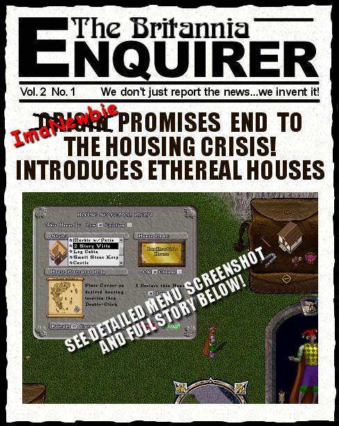
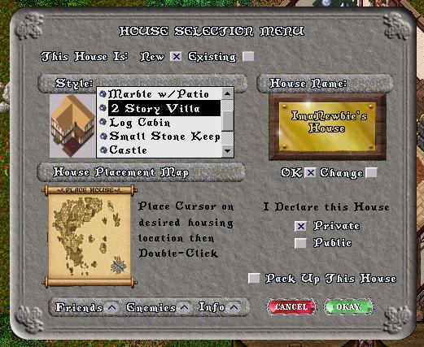

I was sitting at the computer the other day, brainstorming 'toon ideas, when all of a sudden I found myself trapped in a loop thinking about probably one of the most perennial problems in this game. One that with a little thinking on OSI's part does not have to exist at all. What is that? Well you may ask, dear readers. But of course I am talking about "the Housing Crisis". I mean is there anyone out there who truly enjoys zig-zagging their way through the endless maze of houses that make up a good part of the land surface of Britannia. I think not. So here is my solution. It started out as a gag but then the more I thought about it, the more I began to wonder why OSI had not come up with it YEARS ago. So without further ado I present:
ImaNewbie's Plan to End the Housing Crisis:
the Ethereal House
Ethereal House Specs.
- the house, when not placed would appear as an icon in your backpack.
- the house icon would be newbiefied, i.e. unable to be stolen and stay on your corpse if you died.
- to place the house all you would do is double-click the icon in your pack. At that point the server would present you a menu with a mini map of Britannia. Placing a pin in the desired location would determine the closest available housing spot to your that location, place it and teleport you to the front door.
- In the event that you were trying to place a building that was larger than the land area you indicated (i.e. a small island) the server would respond with a friendly message something like "You are trying to place a castle requiring 900 tiles of space on an island with 36 tiles "U StUpId NoOb DoRk!"
- As soon as the house was placed, a rune to that location would be marked and placed in your backpack. As long as you stayed online that place would be semi-reserved, however the house would only actually occupy space when you were in the immediate vicinity.
- As soon as you left the house and were more than two screens away from the front door the house would automatically pack up and return to your backpack.
- As soon as you logged out the house would pack up and return to your backpack.
- All furnishings and objects in the house would remain in place each time you placed the house.
- A check-box would allow declaring the house public or private at time of placement.
- You could own more than one ethereal house but only one could be placed at any one time.
- Guild Houses could be accomodated by giving everyone in the guild a house icon to the guild house in their pack. The first person logged in would place the house. All other icons would then act as runes to teleport guild members to that location. In the event the placing member logged out then current ownership of the house would pass to another online member until none remained online.
Ethereal House Selection Menu

Ethereal House Advantages
- Finally, every player who wanted to own a house would be able to do so, and players that had the resources to own several or many could also do so without having to own multiple accounts.
- The load on the server would be less as the houses and possessions of any player not currently online would be static in the database and not require updating.
- At any given time there are probably less players actually online than housing spaces available so chances that a house could not be placed would be practically non-existent.
- There would be no limit on the number of ethereal houses or types a person could own. This would have the effect of being a gold sink as players with lots of cash would probably opt to buy several or many houses of different types.
- The current ramshackle housing-ghettos would be all but eliminated by the fact that the server could place houses in an orderly and attractive pattern based on current shard population and demand.
- Players would get to move around taking their houses with them. To pack up a house and re-locate in a different location the player would just double-click the house sign and choose "Pack Up House".
Ethereal House Disdvantages/Limitations
- Player Run Vendors - this would have the effect of eliminating the ability of players to sell goods from their vendors while they were offline. However, an easy solution would be for OSI to create vendor malls in good locations and rent space to any players wishing to have 24/7 vendors. Rents would be determined by sales volume and empty vendors would automatically be packed up and placed in the owners backpack by the server until such time as that player re-stocked and re-requested vendor placement.
- Castles and Keeps - Argggg, I feel a rant coming on, but I will bite my tongue. I can hear people already saying, your idea won't work because everyone and their dog will want a Castle. Aye, too true I am afraid. So how the hell could we deal with all the greedy bastards that wanted their own personal, land-hogging, huge-footprint Castle? Well here's a couple of ideas.
- Limit Castle ownership to guilds with 30 members or more
- Allow anyone to own a Castle, but limit the number of concurrent castles that can be active on any shard at any one time to fifteen. If there was a chance that you might not be able to place your ethereal Castle or Keep on login, maybe people would opt for a smaller footprint
- Make Castle owners a delicacy for dragons. i.e. have free roaming dragon gangs that would home in and seek out the owners and occupants of Castles. That way only Castles occupied by sufficient numbers of skilled fighters would be able to survive the onslaught.
Well, that's about it. And anyone at OSI, if you happen to be reading this, give it some thought. Done properly it could end the housing crisis, return the lands of Britannia to a more attractive state, give players the ability to own multiple houses, and hopefully cut down on the active server loads, reducing lag.
***IMPORTANT!*** Before you email me screaming "Who you calling a greedy bastard? ImaNewbie and the L.O.S.E.R.S. own a castle! What makes you so special?" think on this. The castle is part of ImaTown, a player run town comprising four guilds (the L.O.S.E.R.S., the D.O.R.K.S., The ImaTown Citizen's Guild, and the ImaTown Guards) comprising over a hundred members total and growing every day. The castle is open to the public, 24/7, has free crafting and training areas, a rune library and a rares museum, all freely accessible to anyone who cares to visit. So there! Please address all flames and complaints to our Public Relations Director, ImaBiteMe!, care of this newspaper :P
"Of course that's just my opinion ... I could be wrong."
later ... Tryon
Previous Back to Index Next